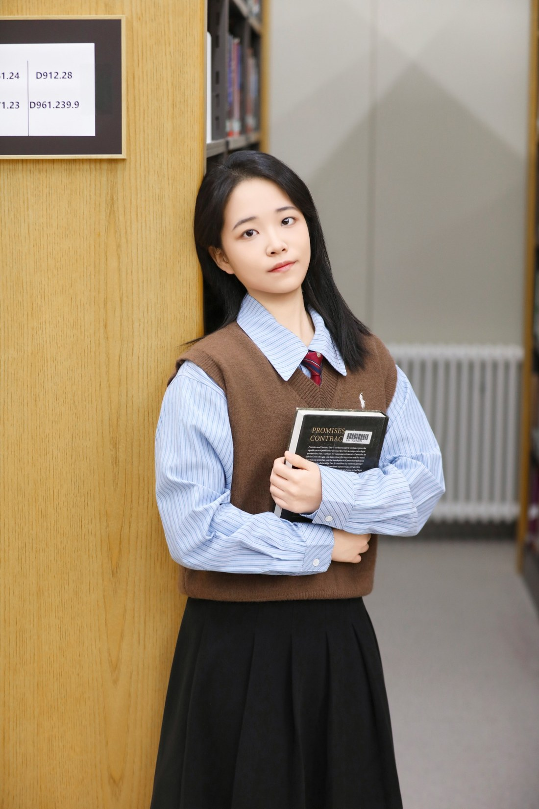

教育背景
EDUCATION中央财经大学 · 商学院
2023.09 — 2027.06（预计）- 加权平均分 92.9，专业排名 1/50；连续三年专业排名第一，已推免至中国人民大学应用经济学院碳经济专业。
- 代表性课程：金融市场与金融机构、供应链管理、C程序设计、零售管理、全球供应链管理（99）；宏观经济学、投资银行学、资产评估（98）；市场营销学、营销渠道管理、采购管理（97）；风险管理、创业学（95）。
- 英语能力：CET-6 528 分，CET-4 576 分。
个人风采
PORTRAITS
主要荣誉
HONORS & SCHOLARSHIPS其他奖学金及荣誉（展开）
实习经历
INTERNSHIPS普华永道中天会计师事务所 · 审计部实习生
2026.01 — 2026.03- 辅助完成约 15 个科目的穿行测试、控制测试、细节测试及截止性测试，负责报告附注 20 余个科目披露底稿编制。
- 负责总公司及 19 家分公司的函证流程，处理境内外纸质、电子函证共 130 余份。
- 借助 Aura 运行 AR 测试和 Target 测试，从百万级业务数据中抽取样本并检查 200 余个样本。
新东方教育科技集团 · 升学产品研发助理
2025.10 — 2026.01- 搜集整理 180 余所高校信息，提炼院校优势、撰写宣传语并制作高校介绍卡片；参与频道节目策划，设计 10 余项节目内容，独立完成 1 期节目脚本。
- 维护全国 30 个省市普通高考、艺考及三大招飞时间轴与官方通知，累计整理升学资讯 2000 余条。
开源证券研究所 · 社服组行研实习生
2025.07 — 2025.10- 参与洗护发行业研究复盘，分析市场发展阶段、竞争格局、品牌优势与竞争策略。
- 参与顺丰同城研究报告，分析主营业务、行业及财务状况，开展盈利预测与 PE/DCF 估值；参与万物新生报告，从自营产品、第三方服务及分平台业务拆解收入并开展分部估值。
- 参与即时零售专题研究，测算市场规模与竞争格局；独立完成极兔速递路演 PPT 中发展历程、公司管理、发展模式及业务等部分。
- 支持宠物食品、美护、保健品、物流、循环经济与即时零售等方向的数据收集和基础分析；撰写 10 余篇会议纪要、独立完成年报点评，并协助培训组内实习生。
上海高顿教育科技有限公司 · 新媒体运营实习生
2025.05 — 2025.07- 结合高校学生学习与生活痛点策划实用型内容，负责笔记文案撰写及可视化素材搭配，多篇笔记浏览量达 1700+，为课程转化引流。
科研经历
RESEARCH高管团队规模如何通过资源配置效率影响企业经营绩效
2026.03 — 2026.06- 基于高层梯队理论、资源基础理论与资源管理理论，构建“高管团队规模—资源配置效率—企业经营绩效”研究框架，使用 A 股非金融上市公司面板数据开展实证研究。
- 采用面板双向固定效应模型，检验高管团队规模与 ROA 的倒 U 型关系，并开展中介效应、调节效应、工具变量、滞后自变量、稳健性及异质性分析。
- 研究发现最优高管团队规模约为 33 人，资源配置效率发挥部分中介作用，中介效应占总效应的 33.6%；资产负债率对传导路径具有负向调节作用。
基于系统动力学的乡村电商发展影响因素分析
2024.11 — 2025.03- 结合 5M1E 分析法，从人员、机器、材料、方法、环境、测量六个维度识别乡村电商发展影响因素，构建因果回路图与存量流量图。
- 利用 H 省 2010—2020 年数据，通过 Vensim 进行仿真模拟，以 GDP 指标验证模型有效性；设计五类政策方案开展灵敏度分析，识别影响乡村电商产值的核心驱动因素。
- 研究进入“青创北京”2025 年“挑战杯”首都大学生课外学术科技作品竞赛学术论文赛道省赛。
北京大学光华管理学院 · 教授科研助理
2024.11 — 2025.09参与《感知 AI 激增引发的普罗米修斯焦虑：员工的职业自我实现需求与离职意愿》课题研究，完成相关文献资料搜集整理、问卷调查结果汇总与数据分析、中英文研究成果校验等工作。
中央财经大学商学院 · 副教授科研助理
2025.04 — 2025.05- 参与国家自然科学基金项目《基于机器学习方法下 IPO 问询式审核的信息披露效果》，负责 IPO 问询回复函多渠道搜集、分类筛选与格式规范化处理。
- 参与《法律中介与资本市场研究》，根据沪深交易所招股文件命名规则筛选法律意见书、律师工作报告等核心资料，完成文本分类归档与标准化处理。
绿色金融主题系列研究报告
在校期间参与《碳捕集与利用（CCUS）研究分析报告》《海洋生物资源利用研究分析报告》《绿色仓储与冷链（光伏冷库）分析报告》三份深度研究报告，主要负责产业链板块撰写、资料搜集与相关章节分析。
社会实践
SOCIAL PRACTICE寻迹京华匠心——北京非遗技艺的沉浸体验与活态传播
2026.02 — 2026.03- 走访景泰蓝、点翠、皮影戏、宫廷风筝四大非遗场馆与工坊，开展实地调研、传承人深度访谈及手工实操体验。
- 梳理非遗技艺发展现状，归纳传承断层、传播单一、市场转化难等问题；依托小红书搭建传播矩阵，产出图文、短视频等内容，完成调研文档与分析报告。
金色热贡，指尖绘梦——冉娜热贡艺术苑“非遗+就业”乡村振兴路径调研
2025.08 — 2025.09- 走访画院、博物馆与当地村落，访谈企业创始人、画师及文旅部门，调研唐卡、刺绣非遗企业运营模式，收集经营数据。
- 分析产品、营销、人才、现金流等发展难题，设计“一体两翼”品牌发展模型、产品矩阵及营销优化方案。项目获“财经报国青年力行”2025年暑期社会实践校级一等奖，并作为“一院一品”项目获校级一等奖。
织锦传承，才俊汇聚——苗绣企业数智化与人才梯队建设
2025.02 — 2025.03- 深入企业生产一线，访谈管理者、资深匠人与青年员工，收集运营、人力、生产数据，梳理传统工坊数字化滞后、人才流失、管理体系不完善等痛点。
- 结合运营管理与人力资源理论，提出轻量化数智化改造方案及分层人才培养、激励体系；相关项目获中央财经大学第二十四届“挑战杯”学生课外学术科技作品竞赛三等奖。
泰山智绘·新章启航——河南省泰山村乡村振兴调研
2024.07 — 2024.08- 带队走访村委会、文旅项目、养老机构与村落，访谈基层干部、商户及村民，梳理“文旅+”产业模式下的乡村就业、人才留存与基层治理现状。
- 分析乡村人才短缺等发展痛点，完成实践调研报告，提升团队统筹、实地调研与问题诊断能力。
竞赛获奖
COMPETITIONS第十届中国大学生人力资源创新实践大赛
雇主品牌赛道个人国家二等奖、京津冀蒙晋赛区一等奖。以专精特新“小巨人”企业易智时代为研究对象，围绕人才吸引与雇主品牌建设开展案例研究，主导招聘海报设计。
第十五届全国大学生电子商务“三创赛”
“鬓上添花”项目聚焦泉州簪花非遗出海，设计 DIY 材料包与多场景产品，融合 AIGC、AR 试戴、区块链数字护照等技术构想；完成市场调研、百页商业计划书、独立站搭建及留学生推广。
2025 CMAU 全国大学生市场研究与商业策划大赛
以中华香皂为研究对象，结合文献研究、深度访谈、问卷调查、文本挖掘与决策树分析，围绕产品、定价、渠道和推广设计品牌年轻化方案。
创新创业与学科竞赛
大学生创新创业训练计划校级结项；中央财经大学2025年创新创业大赛三等奖；“外研社·国才杯”英语组笔译校级银奖；第二届平安财萌杯初赛优胜奖等。
学工与志愿服务
CAMPUS & SERVICE商学院团委学生会 · 综合发展部负责人
筹办招新大会、全干大会、Peer经验分享会等活动；协办新年晚会、基础团校及迎新活动；主管学院报销工作与学生权益维护。
工商管理专业 · 班级学习委员
组织班级学风建设活动，负责班级与教务处对接、学习信息传达及班级成员问题反馈与材料提交。
商学院 · 新生班级助理
协助辅导员开展工作，为新生答疑解惑，帮助新生适应大学生活，参与学风建设活动组织策划，所在集体获学风建设优秀班集体组织奖。
绿色金融青年国际研究会 · 学术实践部研报组
参与绿色金融主题研究报告撰写，负责产业链分析、资料搜集及相关章节撰写，持续跟踪绿色金融政策与绿色产业发展。
志愿服务 · 累计 200 余小时
在校期间参与中国足球协会超级联赛志愿服务、中国管理学年会会议服务、社区银龄家庭陪伴、奥森徒步、星火云支教、校医院协助、校友会数据录入、赛事保障等活动；获“一起云支教·星火梦想课堂”优秀志愿者等荣誉，获评中央财经大学校级二星级志愿者。